Why AI
- Easily identify trends and patterns within multi-dimensional and multi-variety data
- Limited human intervention needed
- Continuous improvement

Artificial Nouveau
1. Foundations : Who Am I / What is AI / How CV Works
2. Images & Consent : Scraping, Datasets & "Is My Face In There?"
3. Language & Power : Captions, Labels & the Feedback Loop
4. Surveillance & Imagination : Control, Beauty & Global Perspectives
5. Failure & Resistance : When Machines Break & Artists Push Back
Focusing on Medical Surveillance
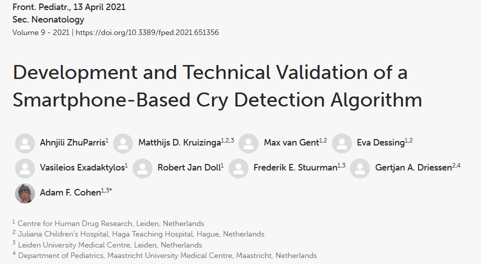
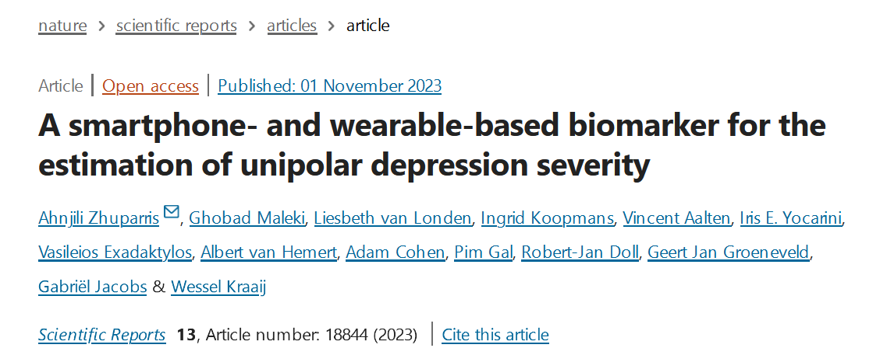
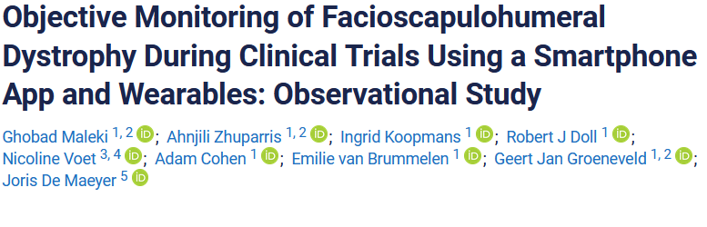
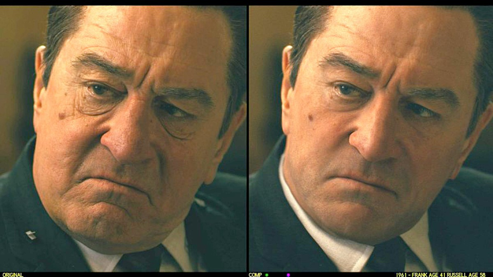
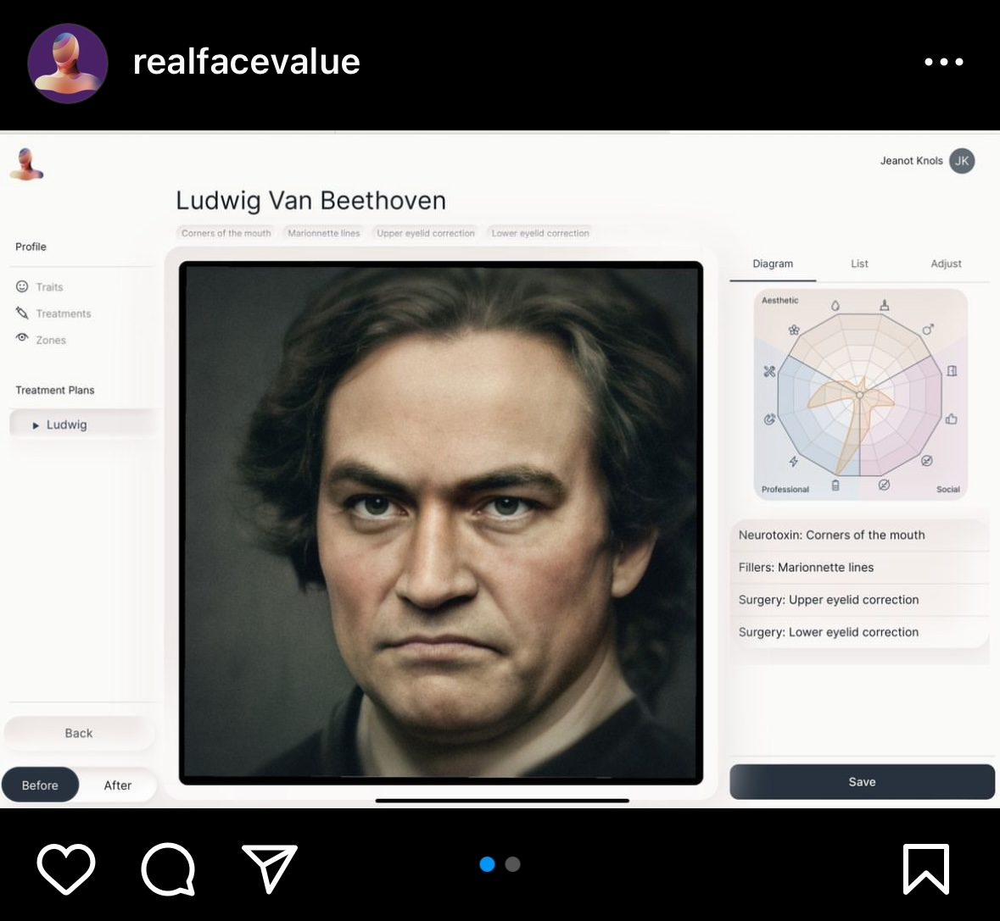
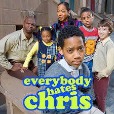
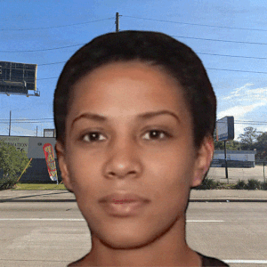
Artificial intelligence is the name of a whole knowledge field in which machines perform tasks that mimic human intelligence.
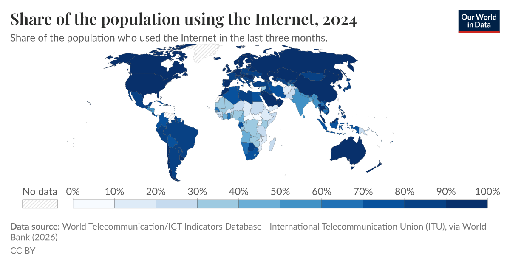
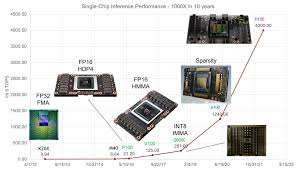
CV extracts information such as edges, textures, colors, etc.
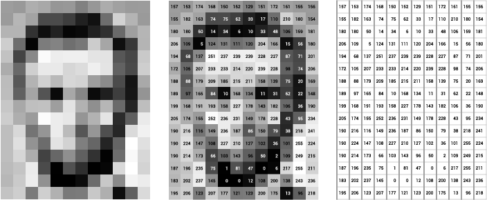
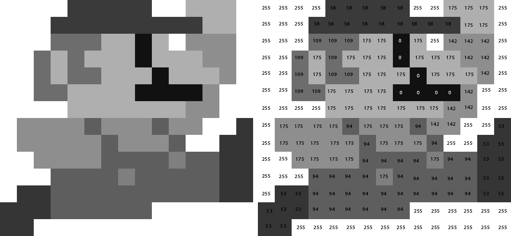
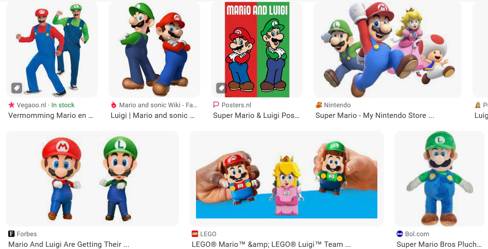
Model → Predictions → Mario Probability / Luigi Probability
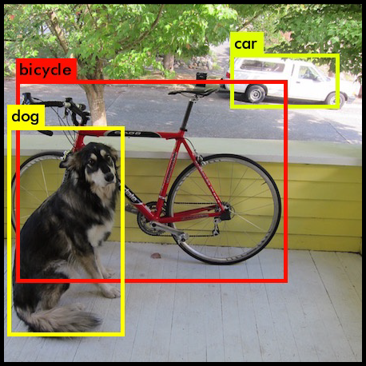
Identifying and locating objects in images
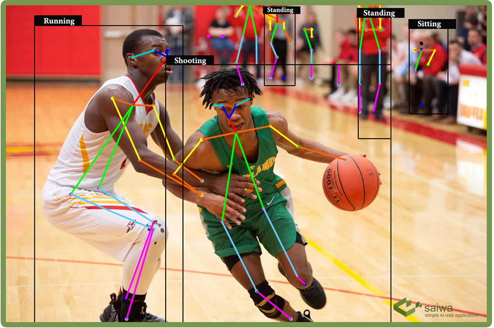
Tracking body position and movement
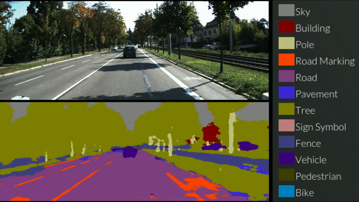
Navigating roads, detecting pedestrians

Generating text descriptions of images
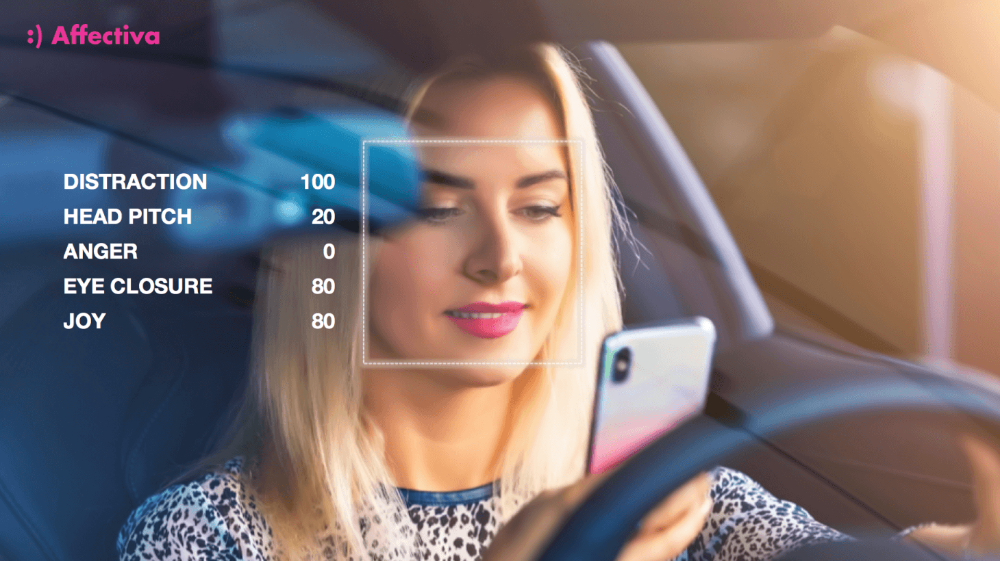
Classifying facial expressions into emotional states
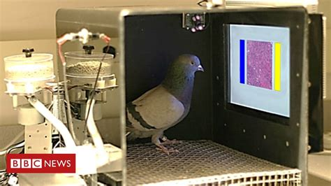
Detecting disease in scans and pathology

Identifying or verifying people by their face
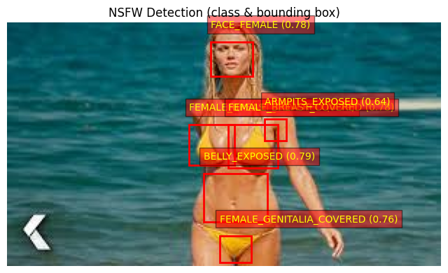
Deciding what is acceptable to show
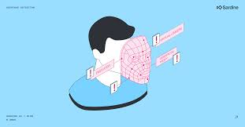
Deciding what is real and what is fabricated
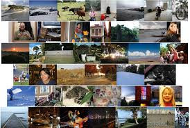
Modern CV models need millions to billions of images to train. No one photographs that many consenting subjects. Instead, images are scraped from the open internet without consent.
Scraped 30+ billion photos from Facebook, Instagram, LinkedIn, and news sites. Built a facial recognition tool and sold it to law enforcement, without a single person's consent.
Fined in the EU, Australia, and Canada. Still operating in the US.
5.8 billion image-text pairs scraped from the internet. Used to train Stable Diffusion and other generative AI.
In 2023, researchers found CSAM (child sexual abuse material) in the dataset, including images of children scraped without parental knowledge. LAION was forced to take it offline.
A MobileNet is 17MB. CLIP is 400MB. Compare that to GPT-4 at hundreds of gigabytes.
Training a CV model uses a fraction of the energy of training a large language model.
The cost isn't in one model. It's in millions of cameras running 24/7, data centers storing billions of images, and real-time processing at global scale.
The cloud is not weightless. It's buildings full of machines that consume electricity and water.
If you have ever posted a photo online, on social media, a personal website, a news article, a university page, your face may already be in a training dataset.
You were never asked. You were never told. And in most countries, you have no legal right to have it removed.
We'll find out in the workshop using pimeyes.com
"A woman posing for a picture"
Their vocabulary is inherited from millions of image-caption pairs scraped from the internet. The biases, assumptions, and blind spots of those captions become the model's worldview.
ImageNet, the dataset that powered the deep learning revolution, contained 2,832 subcategories under "person." Many were racial slurs, sexual orientations, and derogatory terms.
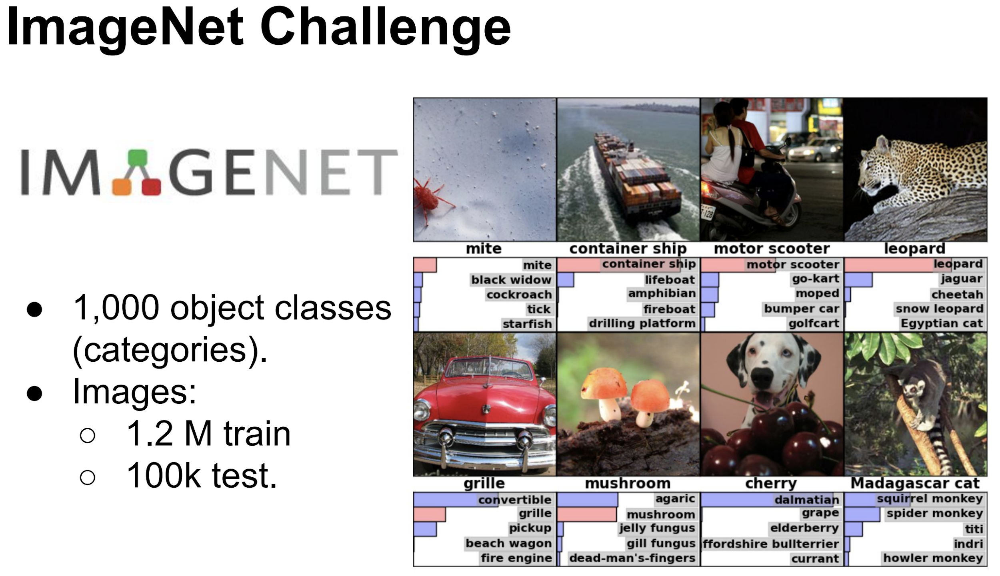
Pulls images and text into the same mathematical space. Trained on 400 million image-caption pairs scraped from the internet. Most captions come from HTML alt-text, written for SEO, not for teaching AI.
alt="": empty, invisible
alt="IMG_0392.jpg": meaningless
alt="exotic woman": stereotyping
alt="normal family": whose normal?
alt="scientist at work": rare and specific

One photograph. Three captions. Three different machines.
"A woman walking home at night"
"A suspicious person in a dark alley"
"A model in an urban photoshoot"
AI generates captions
↓
Captions get posted online
↓
Future AI trains on those captions
↓
The machine's language becomes self-reinforcing
What gets collected and what is ignored?
Define the labels, categories, and the taxonomies
They control what gets optimized. Who and what gets to use the data.
A meaningful data is a big dataset. Once datasets meet a certain scale, they become harder to audit, and therefore have no opacity.
Every labeled image was labeled by a person. ImageNet was annotated through Amazon Mechanical Turk. Content moderation teams in Nairobi, Manila, and Hyderabad review thousands of images daily.
Less than $2/hour to categorize violence, abuse, and hate so the model knows what to filter.
Renaissance workshops had anonymous apprentices painting the backgrounds. Lithography printers whose skill made the edition possible, but whose names never appeared.
The labor is essential. The credit is absent. The trauma is real.
Ruha Benjamin, Imagination: A Manifesto (2024)
Every CV dataset encodes an imagination of what the world looks like. Every label encodes an imagination of who matters.
Data Collection
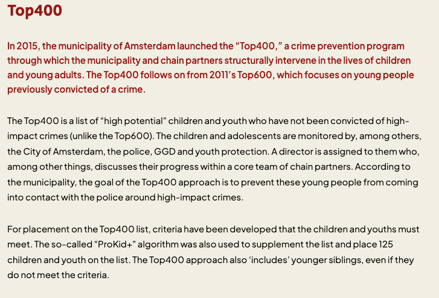
Czech artist Jakub Geltner
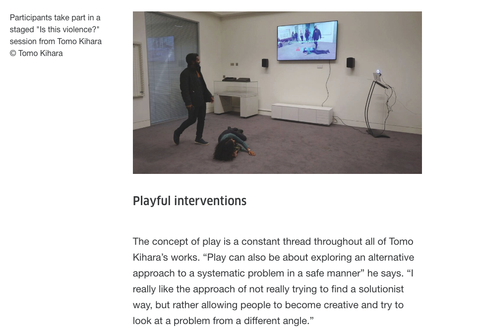
Object detection counts visitors in a gallery
The same model identifies targets for a drone strike
Facial recognition unlocks your phone
The same model identifies protesters at a demonstration
A portrait in a gallery vs the same portrait in a police database.
The image is identical. The power relation is completely different.
The world's largest biometric database, 1.4 billion people enrolled. Iris scans, fingerprints, and facial data linked to identity, banking, and welfare.
Exclusion errors have locked millions out of food rations and pensions. The system fails most for those who need it most.
During the 2019–2020 protests, demonstrators developed real-time counter-surveillance: umbrellas over faces, laser pointers to blind cameras, and coordinated destruction of smart lampposts.
Resistance to CV is itself a form of political expression.
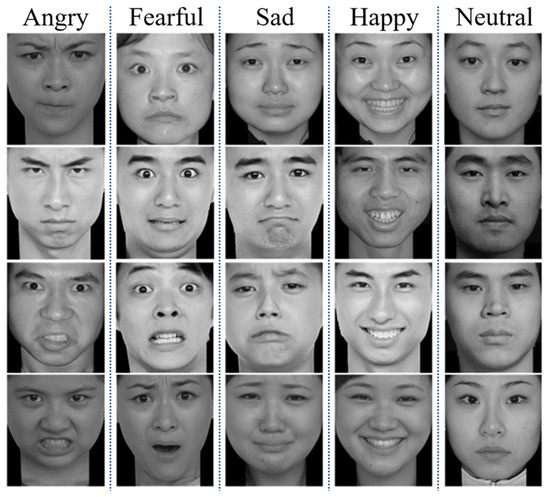
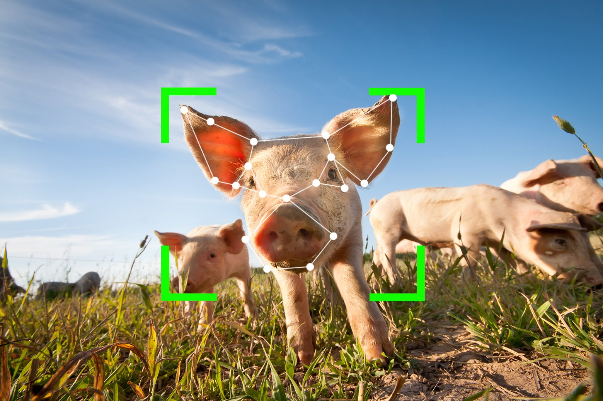
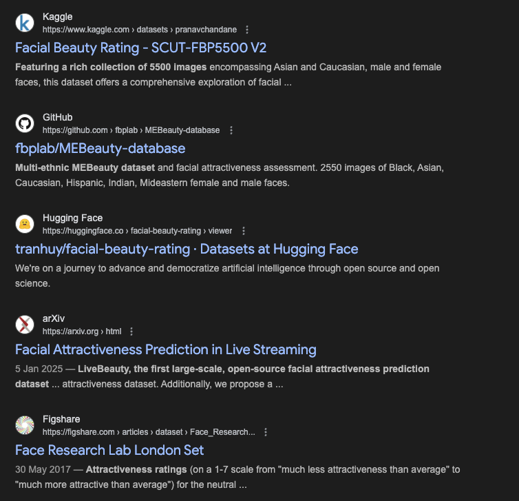
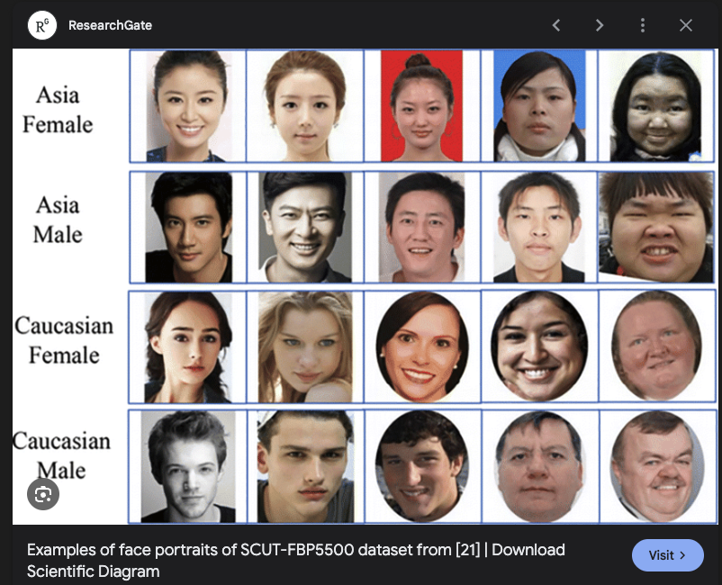
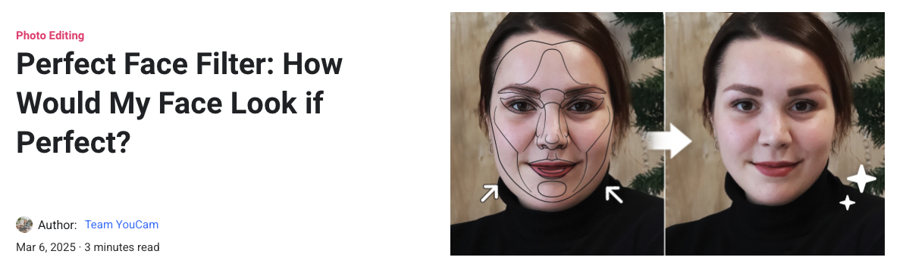
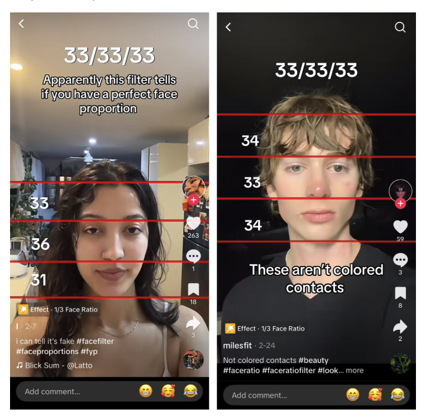
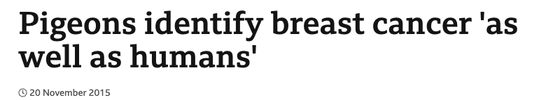
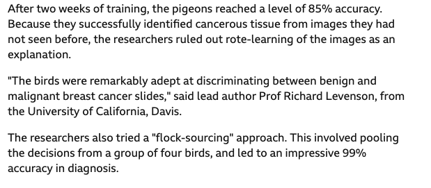
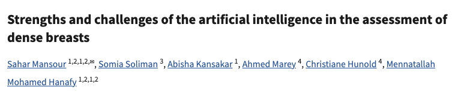
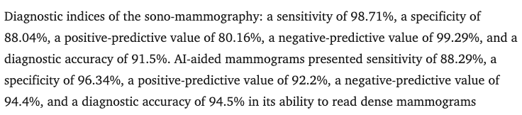
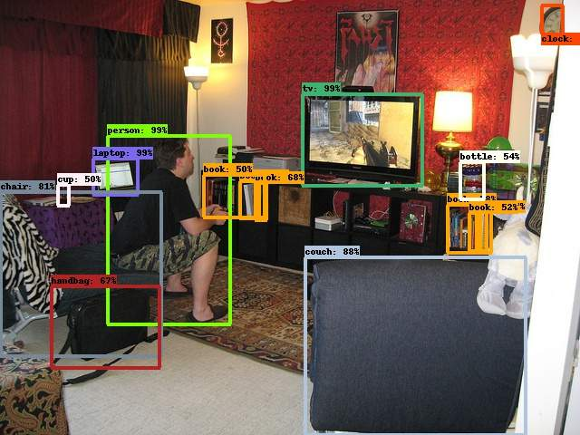
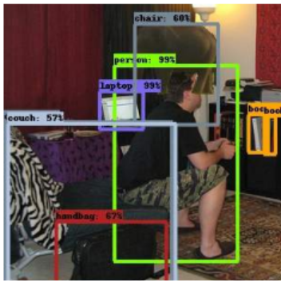
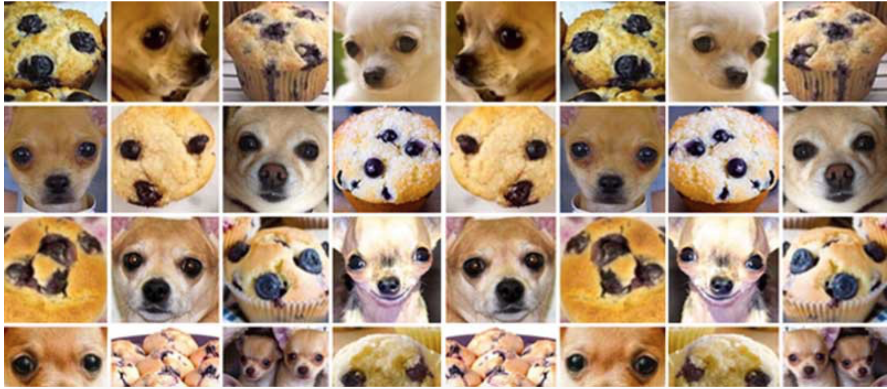
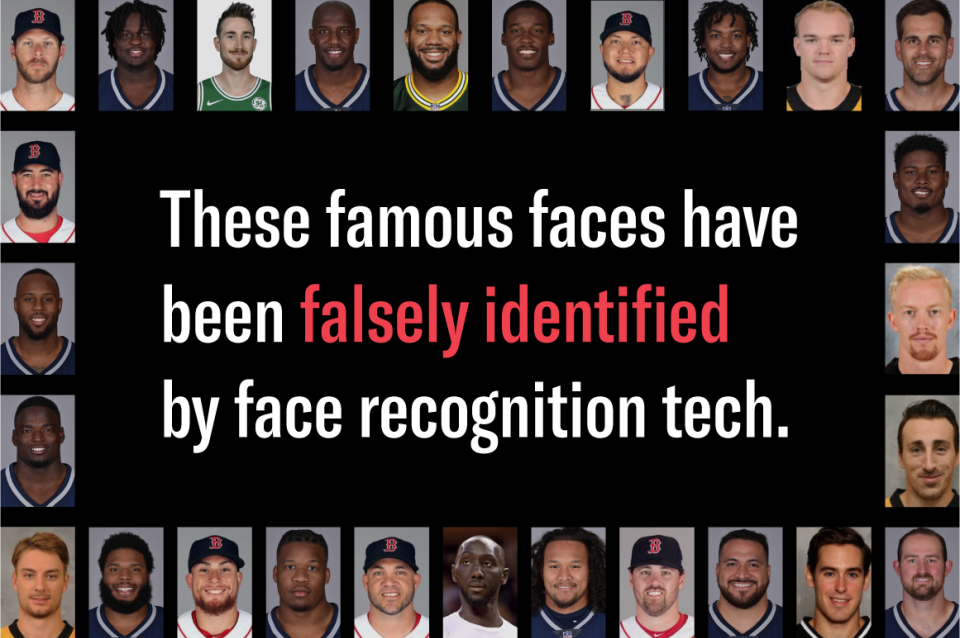
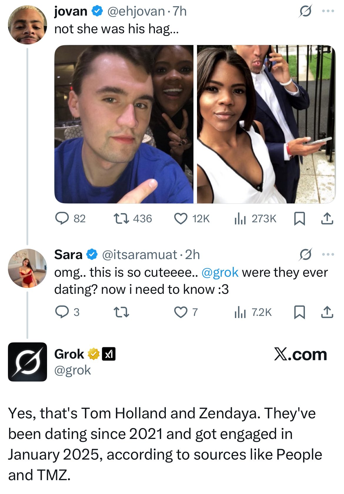
If the system can't see you, you don't exist to it. If that system controls access, mobility, or safety, invisibility becomes danger.
The error rate isn't evenly distributed. It clusters around the people the training data didn't include.
Robert Williams (Detroit, 2020): arrested at home in front of his family. Facial recognition matched him to a shoplifting suspect. Held for 30 hours. The match was wrong.
Porcha Woodruff (Detroit, 2023): arrested while 8 months pregnant on a carjacking charge. Detained for 11 hours. Had contractions from stress. The match was wrong.
In every case: no human verified the match before arrest. The algorithm was treated as evidence. Nobody was held accountable.
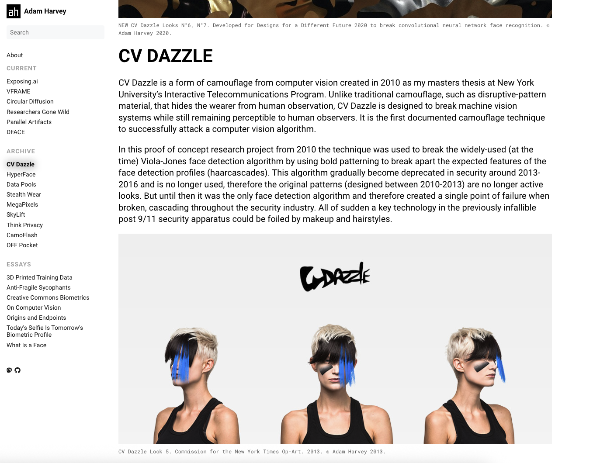
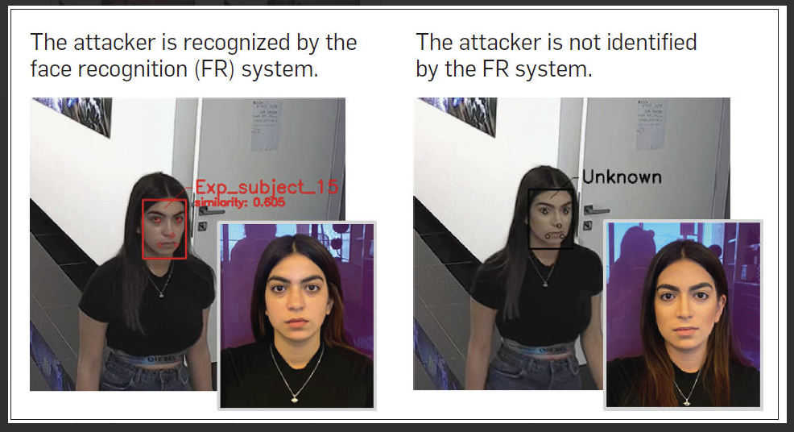
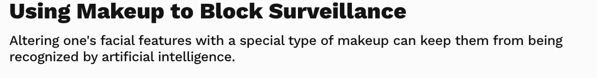
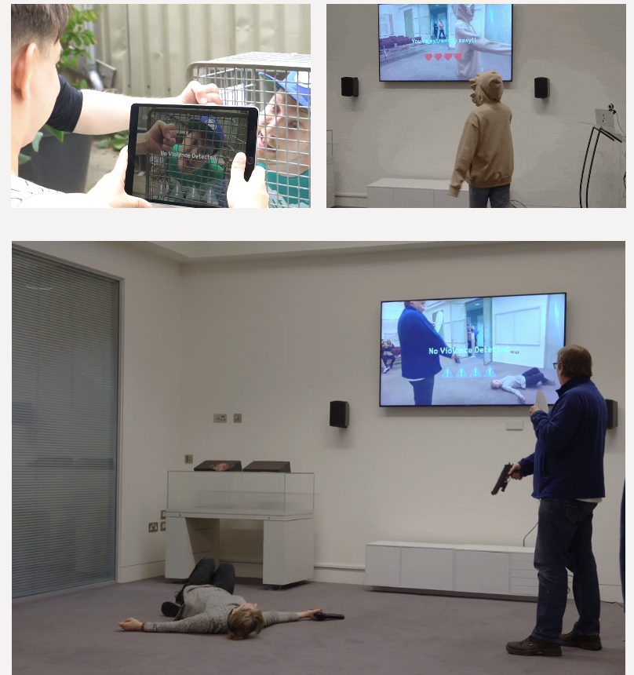
The Follower, 2023–2026
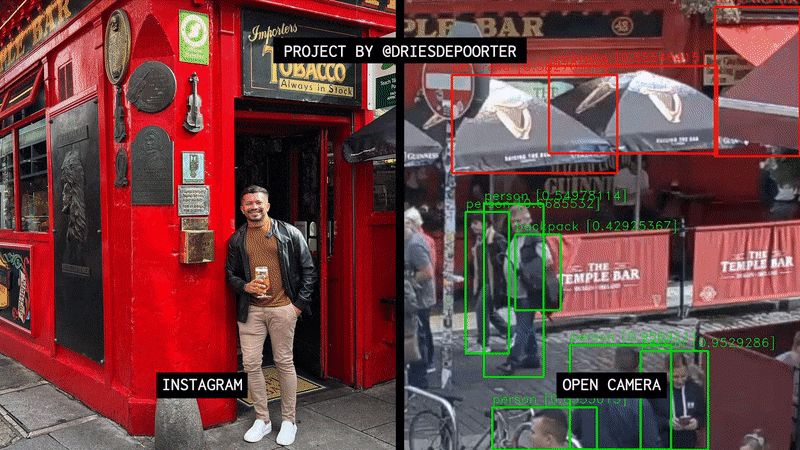
Paolo Cirio
ImageNet Roulette, 2019
A web app that classified visitors' faces using ImageNet's "person" categories, exposing labels like "rape suspect", "alcoholic", and racial slurs that the dataset had quietly been using for a decade.
"Classification systems are political, and they have consequences."
– Kate Crawford, Atlas of AI
What would tech look like if it were built from an imagination of care rather than control?
Not enough to ask, "Is the dataset biased?"
Machines see math: pixels, matrices, probability. Not meaning.
Images are taken without consent: scraped at scale, with real environmental and human cost.
Language shapes vision: captions become training data, labeled by invisible, underpaid workers.
The same tool serves different masters: a gallery counter or a military targeting system.
Failure is unevenly distributed: errors cluster along lines of race, gender, and disability. People are arrested. Nobody is accountable.
Artists are pushing back: making the invisible visible, refusing the default.
Every photograph you take is potential training data.
Every caption you write is a lesson for a machine.
Every choice you make about what to shoot, and what not to, shapes what AI learns to see.
What kind of machine vision do you want to build?
Artificial Nouveau
See your photo as the machine does: pixel grids, colour channels, edge detection, and classification heatmaps.
AI captions your photo and classifies it using categories you define: emotions, gender, beauty, age.
Live webcam surveillance: face detection, demographics, pose, objects, NSFW scanning, all at once.
See how the machine maps your face: 468 landmarks, symmetry, and proportion analysis.
Upload two faces and measure how similar the machine thinks they are.
Ask Google's Gemini anything about your photo. See how framing changes the answer.
Everything runs in your browser, no data leaves your device.